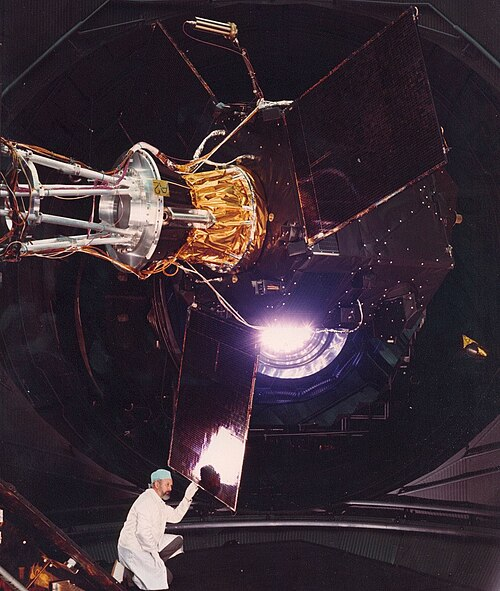
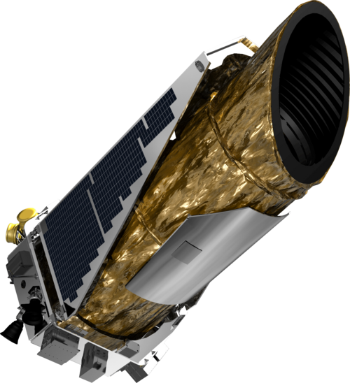
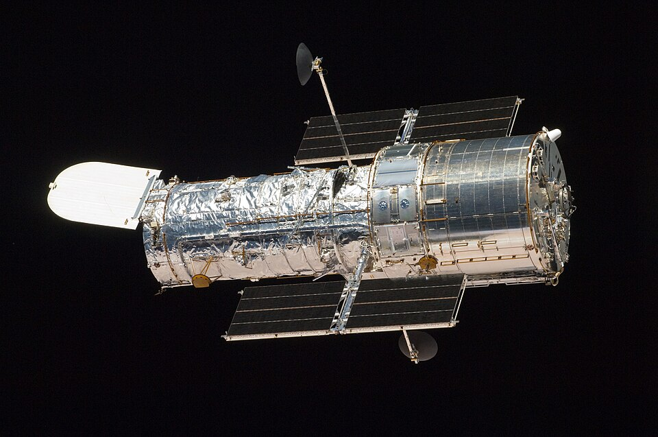
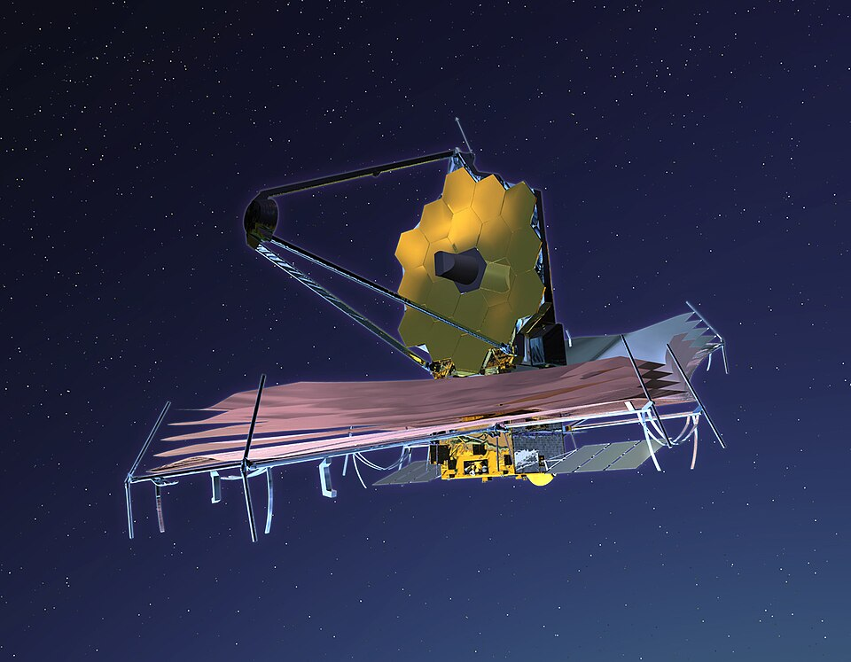
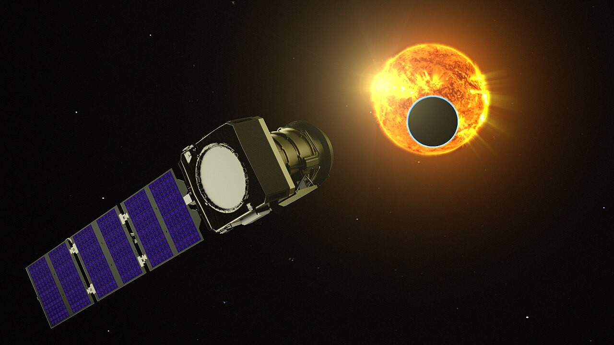

A space telescope (also known as space observatory) is a telescope in outer space used to observe astronomical objects. Suggested by Lyman Spitzer in 1946, the first operational telescopes were the American Orbiting Astronomical Observatory, OAO-2 launched in 1968, and the Soviet Orion 1 ultraviolet telescope aboard space station Salyut 1 in 1971. Space telescopes avoid several problems caused by the Earth's atmosphere, including the absorption or scattering of certain wavelengths of light, obstruction by clouds, and distortions due to atmospheric refraction such as twinkling. Space telescopes can also observe dim objects during the daytime, and they avoid light pollution which ground-based observatories encounter. They are divided into two types: Satellites which map the entire sky (astronomical survey), and satellites which focus on selected astronomical objects or parts of the sky and beyond. Space telescopes are distinct from Earth imaging satellites, which point toward Earth for satellite imaging, applied for weather analysis, espionage, and other types of information gathering.
In 1946, American theoretical astrophysicist Lyman Spitzer, aka "father of Hubble" proposed to put a telescope in space.[1][2] Spitzer's proposal called for a large telescope that would not be hindered by Earth's atmosphere. After lobbying in the 1960s and 1970s for such a system to be built, Spitzer's vision ultimately materialized into the Hubble Space Telescope, which was launched on April 24, 1990, by the Space Shuttle Discovery (STS-31).[3] This was launched due to many efforts by Nancy Grace Roman, aka "mother of Hubble", who was the first Chief of Astronomy and first female executive at NASA.[4] She was a program scientist that worked to convince NASA, the U.S. Congress, and others that Hubble was "very well worth doing".[5
The first operational space telescopes were the American Orbiting Astronomical Observatory, OAO-2 launched in 1968, and the Soviet Orion 1 ultraviolet telescope aboard space station Salyut 1 in 1971.

Hipparcos was a scientific satellite of the European Space Agency (ESA), launched in 1989 and operated until 1993. It was the first space experiment devoted to precision astrometry, the accurate measurement of the positions and distances of celestial objects on the sky.[3] This was the first practical attempt at all-sky absolute parallax measurement, something not possible with groundside observatories, and thus represented a fundamental breakthrough in astronomy.[4] The resulting high-precision measurements of the absolute positions, proper motions, and parallaxes of stars enabled better calculations of their distance and tangential velocity; when combined with radial velocity measurements from spectroscopy, astrophysicists were able to finally measure all six quantities needed to determine the motion of stars. The resulting Hipparcos Catalogue,[5] a high-precision catalogue of more than 118,200 stars, was published in 1997. The lower-precision Tycho Catalogue of more than a million stars was published at the same time, while the enhanced Tycho-2 Catalogue of 2.5 million stars was published in 2000. Hipparcos's follow-up mission,[6] Gaia, was launched in 2013.
The word "Hipparcos" is an acronym for High Precision Parallax Collecting Satellite and also a reference to the ancient Greek astronomer Hipparchus of Nicaea, who is noted for applications of trigonometry to astronomy and his discovery of the precession of the equinoxes.
The highest accuracy photometric data were provided as a by-product of the main mission astrometric observations. They were made in a broad-band visible light passband, specific to Hipparcos, and designated Hp.[14] The median photometric precision, for Hp magnitude, was 0.0015 magnitude, with typically 110 distinct observations per star throughout the 3.5-year observation period. As part of the data reduction and catalogue production, new variables were identified and designated with appropriate variable star designations. Variable stars were classified as periodic or unsolved variables; the former were published with estimates of their period, variability amplitude, and variability type. In total some 11,597 variable objects were detected, of which 8,237 were newly classified as variable. There are, for example, 273 Cepheid variables, 186 RR Lyrae variables, 108 Delta Scuti variables, and 917 eclipsing binary stars. The star mapper observations, constituting the Tycho (and Tycho-2) Catalogue, provided two colours, roughly B and V in the Johnson UBV photometric system, important for spectral classification and effective temperature determination.n star, which leads to the "pulsed" nature of its appearance.
Classical astrometry concerns only motions in the plane of the sky and ignores the star's radial velocity, i.e. its space motion along the line-of-sight. Whilst critical for an understanding of stellar kinematics, and hence population dynamics, its effect is generally imperceptible to astrometric measurements (in the plane of the sky), and therefore it is generally ignored in large-scale astrometric surveys. In practice, it can be measured as a Doppler shift of the spectral lines. More strictly, however, the radial velocity does enter a rigorous astrometric formulation. Specifically, a space velocity along the line-of-sight means that the transformation from tangential linear velocity to (angular) proper motion is a function of time. The resulting effect of secular or perspective acceleration is the interpretation of a transverse acceleration actually arising from a purely linear space velocity with a significant radial component, with the positional effect proportional to the product of the parallax, the proper motion, and the radial velocity. At the accuracy levels of Hipparcos it is of (marginal) importance only for the nearest stars with the largest radial velocities and proper motions, but was accounted for in the 21 cases for which the accumulated positional effect over two years exceeds 0.1 milliarc-sec. Radial velocities for Hipparcos Catalogue stars, to the extent that they are presently known from independent ground-based surveys, can be found from the astronomical database of the Centre de données astronomiques de Strasbourg.
This is called "recycling" because it returns the neutron star to a The absence of reliable distances for the majority of stars means that the angular measurements made, astrometrically, in the plane of the sky, cannot generally be converted into true space velocities in the plane of the sky. For this reason, astrometry characterises the transverse motions of stars in angular measure (e.g. arcsec per year) rather than in km/s or equivalent. Similarly, the typical absence of reliable radial velocities means that the transverse space motion (when known) is, in any case, only a component of the complete, three-dimensional, space velocity.
The Hipparcos results have affected a very broad range of astronomical research, which can be classified into three major themes: the provision of an accurate reference frame: this has allowed the consistent and rigorous re-reduction of historical astrometric measurements, including those from Schmidt plates, meridian circles, the 100-year-old Astrographic Catalogue, and 150 years of Earth-orientation measurements. These, in turn, have yielded a dense reference framework with high-accuracy, long-term proper motions (the Tycho-2 Catalogue). Reduction of current state-of-the-art survey data has yielded the dense UCAC2 Catalogue of the U.S. Naval Observatory on the same reference system, and improved astrometric data from recent surveys such as the Sloan Digital Sky Survey and 2MASS. Implicit in the high-accuracy reference frame is the measurement of gravitational lensing and the detection and characterisation of double and multiple stars; constraints on stellar structure and stellar evolution: the accurate distances and luminosities of 100,000 stars has provided the most comprehensive and accurate data set of fundamental stellar parameters to date, placing constraints on internal rotation, element diffusion, convective motions, and asteroseismology. Combined with theoretical models and other data it yields evolutionary masses, radii, and ages for large numbers of stars covering a wide range of evolutionary states;
Galactic kinematics and dynamics: the uniform and accurate distances and proper motions have provided a substantial advance in understanding of stellar kinematics and the dynamical structure of the solar neighbourhood, ranging from the presence and evolution of clusters, associations and moving groups, the presence of resonance motions due to the Galaxy's central bar and spiral arms, determination of the parameters describing galactic rotation, discrimination of the disk and halo populations, evidence for halo accretion, and the measurement of space motions of runaway stars, globular clusters, and many other types of star

The Kepler space telescope was a space telescope launched by NASA in 2009[5] to discover Earth-sized planets orbiting other stars.[6][7] Named after astronomer Johannes Kepler[8] (who, ironically, was convinced that planetary systems did not exist around any of the stars)[9] the spacecraft was launched into an Earth-trailing heliocentric orbit. The principal investigator was William J. Borucki. After nine and a half years of operation, the telescope's reaction control system fuel was depleted, and NASA announced its retirement on October 30, 2018
Designed to survey a portion of Earth's region of the Milky Way to discover Earth-size exoplanets in or near habitable zones and to estimate how many of the billions of stars in the Milky Way have such planets,[6][12][13] Kepler's sole scientific instrument is a photometer that continually monitored the brightness of approximately 150,000 main sequence stars in a fixed field of view.[14] These data were transmitted to Earth, then analyzed to detect periodic dimming caused by exoplanets that cross in front of their host star. Only planets whose orbits are seen edge-on from Earth could be detected. Kepler observed 530,506 stars, and had detected 2,778 confirmed planets as of June 16, 2023.
The telescope has a mass of 1,039 kilograms (2,291 lb) and contains a Schmidt camera with a 0.95-meter (37.4 in) front corrector plate (lens) feeding a 1.4-meter (55 in) primary mirror—at the time of its launch this was the largest mirror on any telescope outside Earth orbit,[48] though the Herschel Space Observatory took this title a few months later. Its telescope has a 115 deg2 (about 12-degree diameter) field of view (FoV), roughly equivalent to the size of one's fist held at arm's length. Of this, 105 deg2 is of science quality, with less than 11% vignetting. The photometer has a soft focus to provide excellent photometry, rather than sharp images. The mission goal was a combined differential photometric precision (CDPP) of 20 ppm for a m(V)=12 Sun-like star for a 6.5-hour integration, though the observations fell short of this objective (see mission status).
The focal plane of the spacecraft's camera is made out of forty-two 50 × 25 mm (2 × 1 in) CCDs at 2200×1024 pixels each, possessing a total resolution of 94.6 megapixels,[49][50] which at the time made it the largest camera system launched into space.[20] The array was cooled by heat pipes connected to an external radiator.[1] The CCDs were read out every 6.5 seconds (to limit saturation) and co-added on board for 58.89 seconds for short cadence targets, and 1765.5 seconds (29.4 minutes) for long cadence targets.[51] Due to the larger bandwidth requirements for the former, these were limited in number to 512 compared to 170,000 for long cadence. However, even though at launch Kepler had the highest data rate of any NASA mission,[citation needed] the 29-minute sums of all 95 million pixels constituted more data than could be stored and sent back to Earth. Therefore, the science team pre-selected the relevant pixels associated with each star of interest, amounting to about 6 percent of the pixels (5.4 megapixels). The data from these pixels was then requantized, compressed and stored, along with other auxiliary data, in the on-board 16 gigabyte solid-state recorder. Data that was stored and downlinked includes science stars, p-mode stars, smear, black level, background and full field-of-view images
The Kepler primary mirror is 1.4 meters (4.6 ft) in diameter. Manufactured by glass maker Corning using ultra-low expansion (ULE) glass, the mirror is specifically designed to have a mass only 14% that of a solid mirror of the same size.[53][54] To produce a space telescope system with sufficient sensitivity to detect relatively small planets, as they pass in front of stars, a very high reflectance coating on the primary mirror was required. Using ion assisted evaporation, Surface Optics Corp. applied a protective nine-layer silver coating to enhance reflection and a dielectric interference coating to minimize the formation of color centers and atmospheric moisture absorption.[
In terms of photometric performance, Kepler worked well, much better than any Earth-bound telescope, but short of design goals. The objective was a combined differential photometric precision (CDPP) of 20 parts per million (PPM) on a magnitude 12 star for a 6.5-hour integration. This estimate was developed allowing 10 ppm for stellar variability, roughly the value for the Sun. The obtained accuracy for this observation has a wide range, depending on the star and position on the focal plane, with a median of 29 ppm. Most of the additional noise appears to be due to a larger-than-expected variability in the stars themselves (19.5 ppm as opposed to the assumed 10.0 ppm), with the rest due to instrumental noise sources slightly larger than predicted.[57][49] Because decrease in brightness from an Earth-size planet transiting a Sun-like star is so small, only 80 ppm, the increased noise means each individual transit is only a 2.7 σ event, instead of the intended 4 σ. This, in turn, means more transits must be observed to be sure of a detection. Scientific estimates indicated that a mission lasting 7 to 8 years, as opposed to the originally planned 3.5 years, would be needed to find all transiting Earth-sized planets.[58] On April 4, 2012, the Kepler mission was approved for extension through the fiscal year 2016,[21][59] but this also depended on all remaining reaction wheels staying healthy, which turned out not to be the case (see Reaction wheel issues below).

rThe Hubble Space Telescope (HST or Hubble) is a space telescope that was launched into low Earth orbit in 1990 and remains in operation. It was not the first space telescope, but it is one of the largest and most versatile, renowned as a vital research tool and as a public relations boon for astronomy. The Hubble Space Telescope is named after astronomer Edwin Hubble and is one of NASA's Great Observatories. The Space Telescope Science Institute (STScI) selects Hubble's targets and processes the resulting data, while the Goddard Space Flight Center (GSFC) controls the spacecraft
Hubble features a 2.4 m (7 ft 10 in) mirror, and its five main instruments observe in the ultraviolet, visible, and near-infrared regions of the electromagnetic spectrum. Hubble's orbit outside the distortion of Earth's atmosphere allows it to capture extremely high-resolution images with substantially lower background light than ground-based telescopes. It has recorded some of the most detailed visible light images, allowing a deep view into space. Many Hubble observations have led to breakthroughs in astrophysics, such as determining the rate of expansion of the universe.
In the early 1980s, NASA and STScI convened four panels to discuss key projects. These were projects that were both scientifically important and would require significant telescope time, which would be explicitly dedicated to each project. This guaranteed that these particular projects would be completed early, in case the telescope failed sooner than expected. The panels identified three such projects: 1a study of the nearby intergalactic medium using quasar absorption lines to determine the properties of the intergalactic medium and the gaseous content of galaxies and groups of galaxies;[170] 2a medium deep survey using the Wide Field Camera to take data whenever one of the other instruments was being used[171] and 3 a project to determine the Hubble constant within ten percent by reducing the errors, both external and internal, in the calibration of the distance scale. through include, but are not limited to, the scenarios listed below:
Among its primary mission targets was to measure distances to Cepheid variable stars more accurately than ever before, and thus constrain the value of the Hubble constant, the measure of the rate at which the universe is expanding, which is also related to its age. Before the launch of HST, estimates of the Hubble constant typically had errors of up to 50%, but Hubble measurements of Cepheid variables in the Virgo Cluster and other distant galaxy clusters provided a measured value with an accuracy of ±10%, which is consistent with other more accurate measurements made since Hubble's launch using other techniques.[173] The estimated age of the universe is now 13.7 billion years. (Before the Hubble Telescope it was ten to twenty billion.)
Astronomers from the High-z Supernova Search Team and the Supernova Cosmology Project used ground-based telescopes and HST to observe distant supernovae and uncovered evidence that, far from decelerating under the influence of gravity, the expansion of the universe is instead accelerating. Three members of these two groups have subsequently been awarded Nobel Prizes for their discovery.[175] The cause of this acceleration remains poorly understood;[176] the term used for the currently-unknown cause is dark energy, signifying that it is dark (unable to be directly seen and detected) to our current scientific instruments he high-resolution spectra and images provided by the HST have been especially well-suited to establishing the prevalence of black holes in the center of nearby galaxies. While it had been hypothesized in the early 1960s that black holes would be found at the centers of some galaxies, and astronomers in the 1980s identified a number of good black hole candidates, work conducted with Hubble shows that black holes are probably common to the centers of all galaxies.[178] The Hubble programs further established that the masses of the nuclear black holes and properties of the galaxies are closely related.
A unique window on the Universe enabled by Hubble are the Hubble Deep Field, Hubble Ultra-Deep Field, and Hubble Extreme Deep Field images, which used Hubble's unmatched sensitivity at visible wavelengths to create images of small patches of sky that are the deepest ever obtained at optical wavelengths. The images reveal galaxies billions of light years away, thereby providing information about the early Universe, and have accordingly generated a wealth of scientific papers. The Wide Field Camera 3 improved the view of these fields in the infrared and ultraviolet, supporting the discovery of some of the most distant objects yet discovered, such as MACS0647-JD.[181] The non-standard object SCP 06F6 was discovered by the Hubble Space Telescope in February 2006.[182][183] On March 3, 2016, researchers using Hubble data announced the discovery of the farthest confirmed galaxy to date: GN-z11, which Hubble observed as it existed roughly 400 million years after the Big Bang.[184] The Hubble observations occurred on February 11, 2015, and April 3, 2015, as part of the CANDELS/GOODS-North surveys
TThe collision of Comet Shoemaker-Levy 9 with Jupiter in 1994 was fortuitously timed for astronomers, coming just a few months after Servicing Mission 1 had restored Hubble's optical performance. Hubble images of the planet were sharper than any taken since the passage of Voyager 2 in 1979, and were crucial in studying the dynamics of the collision of a large comet with Jupiter, an event believed to occur once every few centuries.[187] In March 2015, researchers announced that measurements of aurorae around Ganymede, one of Jupiter's moons, revealed that it has a subsurface ocean. Using Hubble to study the motion of its aurorae, the researchers determined that a large saltwater ocean was helping to suppress the interaction between Jupiter's magnetic field and that of Ganymede. The ocean is estimated to be 100 km (60 mi) deep, trapped beneath a 150 km (90 mi) ice crust.[188][189] HST has also been used to study objects in the outer reaches of the Solar System, including the dwarf planets Pluto,[190] Eris,[191] and Sedna.[192] During June and July 2012, U.S. astronomers using Hubble discovered Styx, a tiny fifth moon orbiting Pluto.[

he James Webb Space Telescope (JWST) is a space telescope designed to conduct infrared astronomy. It is the largest telescope in space, and is equipped with high-resolution and high-sensitivity instruments, allowing it to view objects too old, distant, or faint for the Hubble Space Telescope.[9] This enables investigations across many fields of astronomy and cosmology, such as observation of the first stars and the formation of the first galaxies, and detailed atmospheric characterization of potentially habitable exoplanets.[
Despite Webb's mirror diameter being 2.7 times larger than that of the Hubble Space Telescope, it produces images of comparable resolution because it observes in the infrared spectrum, which has longer wavelengths than the Hubble's visible spectrum. The longer the wavelength the telescope is designed to observe, the larger the information-gathering surface (mirrors in the infrared spectrum or antenna area in the millimeter and radio ranges) required to achieve the desired resolution. The Webb was launched on 25 December 2021 on an Ariane 5 rocket from Kourou, French Guiana. In January 2022, it arrived at its destination, a solar orbit near the Sun–Earth L2 Lagrange point, about 1.5 million kilometers (930,000 mi) from Earth. The telescope's first image was released to the public on 11 July 2022.
The JWST completed its commissioning and began full scientific operations on 11 July 2022.[259] With some exceptions, most experiment data is kept private for one year for the exclusive use of scientists running that particular experiment, and then the raw data is released to the public. JWST observations substantially advanced understanding of exoplanets, the first billion years of the universe,[267] and other astrophysical and cosmological phenomena.
The first full-color images and spectroscopic data were released on 12 July 2022, marking the official start of Webb's general science operations. U.S. President Joe Biden revealed the first image, Webb's First Deep Field, on 11 July 2022.[263][264] Additional releases around this time include:[268][269][270] Carina Nebula – young, star-forming region called NGC 3324 about 8,500 light-years from Earth, described by NASA as "Cosmic Cliffs". WASP-96b – including an analysis of atmosphere with evidence of water around a giant gas planet orbiting a distant star 1,120 light-years from Earth. Southern Ring Nebula – clouds of gas and dust expelled by a dying star 2,500 light-years from Earth. Stephan's Quintet – a visual display of five galaxies with colliding gas and dust clouds creating new stars; four central galaxies are 290 million light-years from Earth. SMACS J0723.3-7327 – a galaxy cluster at redshift 0.39, with distant background galaxies whose images are distorted and magnified due to gravitational lensing by the cluster. This image has been called Webb's First Deep Field. It was later discovered that in this picture were three ancient galaxies that existed shortly after the Big Bang. The images of these distant galaxies are views of the universe 13.1 billion years ago.[269][271][272] On 14 July 2022, NASA presented images of Jupiter and related areas by the JWST, including infrared views.[273] In a preprint released around the same time, NASA, ESA, and CSA scientists stated that "the science performance of JWST is better than expected". The document stated that during commissioning, the instruments captured spectra of transiting exoplanets with a precision better than 1000 ppm per data point and tracked moving objects at speeds up to 67 milliarcseconds/second, more than twice the required speed.[a] It also obtained the spectra of hundreds of stars simultaneously in a dense field towards the Milky Way's Galactic Center. Other targets included:[
Within two weeks of the first Webb images, several preprint papers described a wide range of high-redshift, very luminous (presumably large) galaxies believed to date back to 235 million years (z=16.7) to 280 million years after the Big Bang, far earlier than previously known.[239][240] On 17 August 2022, NASA released a large mosaic image of 690 individual frames taken by the NIRCam on Webb of numerous very early galaxies.[275][276] Some early galaxies observed by Webb like CEERS-93316, which was believed to have an estimated photometric redshift of approximately z=16.7 corresponding to 235.8 million years after the Big Bang, are high redshift galaxy candidates.[277][278] However, for CEERS-93316 specifically, a later spectroscopic redshift measurement revealed a more accurate redshift value of approximately z=4.91.[279] In September 2022, primordial black holes were proposed as explaining these unexpectedly large and early galaxies.[280][281][282] In May 2024, the JWST identified the most distant known galaxy, JADES-GS-z14-0,[283] seen just 290 million years after the Big Bang, corresponding to a redshift of 14.32. Part of the JWST Advanced Deep Extragalactic Survey (JADES), this discovery highlights a galaxy significantly more luminous and massive than expected for such an early period. Detailed analysis using JWST's NIRSpec and MIRI instruments revealed this galaxy's remarkable properties, including its significant size and dust content, challenging current models of early galaxy formation.[2
n late 2025, JWST observations of high-redshift "little red dots" (LRDs) and early galaxies provided constraints favoring the existence of massive black hole seeds over standard stellar-remnant models. In August 2025, Juodžbalis et al. reported a direct dynamical mass measurement of a black hole in a strongly lensed LRD galaxy UHZ1 at redshift z=7.04, finding a central mass of about 50 million solar masses, outweighing its galaxy's stars. The authors describe it as consistent with formation in the early universe.[285] Subsequently, Tripodi et al. identified an active galactic nucleus in the LRD "CANUCS-LRD-z8.6" at about z=8.6, containing a roughly 108 solar mass black hole that had grown rapidly before its host galaxy established significant stellar mass, consistent with extremely early formation or direct collapse.[286] Concurrently, Chavez Ortiz et al. presented evidence for an active ~107.2 solar mass black hole in the galaxy GHZ2 at z=12.34, less than 400 million years after the Big Bang — the most distant black hole identified to date — further challenging standard accretion limits and supporting rapid formation mechanisms

Pandora is a NASA small satellite space telescope designed to study the atmospheres of transiting exoplanets (exoplanets that pass in front of their host stars).[1] Pandora will also help identify exoplanet targets worthy of more in-depth atmospheric studies by JWST and future space telescopes designed to search for signs of life.[6][7] The spacecraft launched on January 11, 2026 aboard a SpaceX rideshare mission "Twilight"[3] into a Sun-synchronous low Earth orbit to carry out about one year of science operations
During a planetary transit, a small fraction of starlight passes through the planet's atmosphere before reaching a telescope. Measuring how the light from the star changes during such a transit can provide insights into the planet's atmosphere. However, starspots and other features on the star can also affect the measured spectrum and mimic or hide atmospheric features
Pandora's primary objective is to measure and correct for this "stellar contamination" by combining long-term visible-light monitoring of each host star with simultaneous near-infrared spectroscopy taken during transits. After accounting for the host star's variability, the mission aims to identify planets with hydrogen- or water-dominated atmospheres and to determine which planets are likely covered by clouds or hazes.
Pandora's payload is built around an all-aluminum Cassegrain telescope with a 45 cm (18 in) aperture and a baffle to reduce stray light.[2] A beam-splitting mirror sends visible light to a photometer while directing near-infrared light to a spectrograph, allowing both measurements to be taken at the same time.[5] Pandora's visible wavelength channel measures brightness changes from about 0.38-0.75 μm, while the near-infrared channel collects spectra from about 0.87-1.63 μm.[5] The near-infrared detector is a Teledyne HAWAII-2RG sensor originally built as a flight spare for the James Webb Space Telescope Near Infrared Camera (NIRCam).[2] For stable infrared measurements, the detector is cooled to below 110 K (−163 °C; −262 °F) using a cryocooler and thermal-control system
The payload is developed by Lawrence Livermore National Laboratory and partners, and the spacecraft bus is supplied by Blue Canyon Technologies.[9] NASA's Goddard Space Flight Center provided the infrared detector and detector electronics.[9] The University of Arizona is responsible for mission operations,[10] while NASA's Ames Research Center leads data processing, archiving, and distribution Pandora operates in a Sun-synchronous low Earth orbit at roughly 600 km (370 mi) altitude, enabling access to the entire sky over the course of a year.[5] After an initial checkout and commissioning period of about one month, the mission's prime science phase is planned to last one year, with the possibility of an extended mission. Its primary mission objective is to observe at least 20 transiting exoplanets, collecting a minimum of 10 transit observations per target (more than 200 transits total). Each observing visit typically lasts about 24 hours and can span multiple orbits.[5] The mission will also use observations from ground-based observatories to refine transit timing and track long-term variability of each host star, including from NASA's Exoplanet Watch citizen science initiative